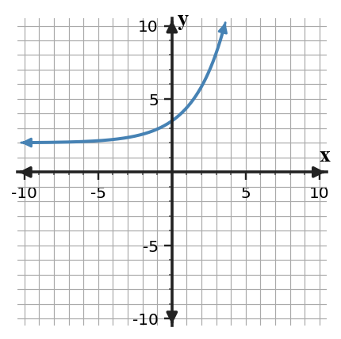

9.
Compare the equation $y=(x-2)^2-9$, the graph, and the table. Explain how each representation shows or hides the same key features.

| $x$ | $-1$ | $0$ | $2$ | $5$ |
|---|---|---|---|---|
| $y$ | $0$ | $-5$ | $-9$ | $0$ |
Use these problems to graph and analyze exponential functions using key points, intercepts, asymptotes, and multipliers. Focus on explaining graph features with equation evidence.
Find the output for each input, then use the pattern to describe the graph as increasing or decreasing.
| $x$ | -1 | 0 | 1 | 2 |
|---|---|---|---|---|
| $y=4(0.5)^x$ |
A graph of an exponential function has y-intercept 9 and each time x increases by 1 the y-value is multiplied by 0.5. Write an equation, calculate the outputs at x = 2 and x = 4, and use those values to describe the graph as increasing or decreasing.
Construct a strategy a classmate could use to graph any function of the form $y=a(b)^x+d$ without a calculator graphing tool. Your strategy must include key points, the asymptote, and how to decide growth or decay.
Use the graph and an exponential equation idea together to describe a possible exponential function.

Create a reasonable equation, list two key features, and explain why the equation matches the graph.
Complete each square pattern.
Write the conjugate factor pair for each difference of squares.
Decide whether $4x^2-12x+9$ is a perfect-square trinomial. Support your answer by checking the first square, last square, and middle term.
Write an expression that is a difference of squares with factors $(5a+2b)$ and $(5a-2b)$. Then expand to verify.
Compare the equation $y=(x-2)^2-9$, the graph, and the table. Explain how each representation shows or hides the same key features.
| $x$ | $-1$ | $0$ | $2$ | $5$ |
|---|---|---|---|---|
| $y$ | $0$ | $-5$ | $-9$ | $0$ |
A student factors $18x^2+27x$ as $3x(6x+9)$ and says the job is complete.
Critique the work. Identify what is correct, what is incomplete, and write the expression factored completely.
A proposed model for a break-even situation is $P(x)=2(x-5)(x+1)$. The context says both break-even points must be positive. Revise the model and justify your revision.
Synthesize a table, a graph sketch, and a factored equation for a quadratic with zeros $-2$ and $4$ and y-intercept $-8$.

Classify $x^2-14x+49$ as a perfect-square trinomial or not.
Solve or interpret the quadratic situation for Completing the Square. Show the algebra that supports your answer.
Solve $2(x-3)^2-18=0$.
Strategy Construction. Analyze the quadratic evidence for Quadratic Formula. Write a conclusion and justify it with algebraic or graphical evidence.
Design a step-by-step solving strategy for $2x^2+9x-5=0$ that avoids unnecessary work. Then solve it.

Design A Model Or Context. Create or revise a quadratic task for Solving Quadratics by Factoring using the constraints below.
Design a break-even context that can be modeled by $P(x)=-(x-2)(x-10)$. Include a graph or table you would use, solve for the break-even inputs, and interpret them.